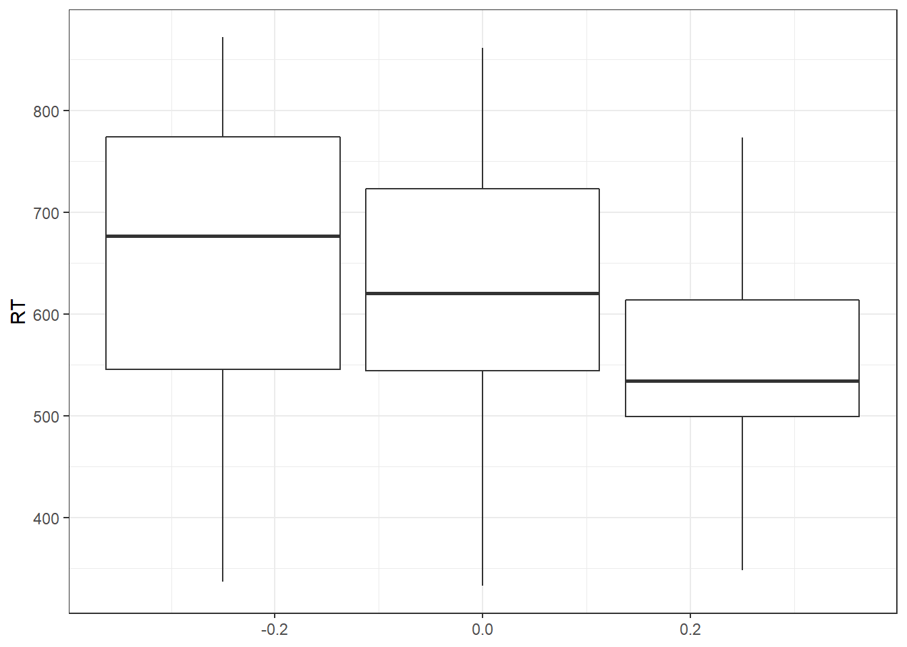
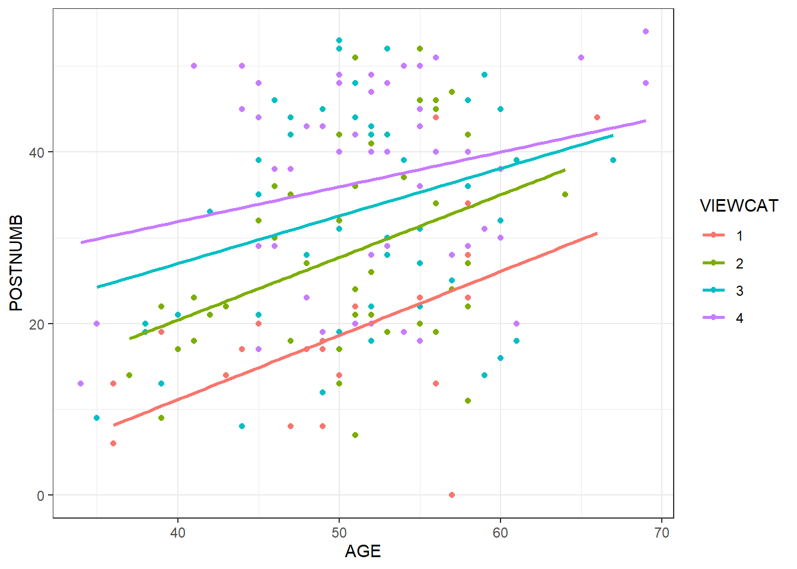

1 Week 1 - Class
During the practical you will work on some exercises about ANOVA and ANCOVA using regression and path modeling. Note that ANOVA and ANCOVA are special cases of regression, as discussed during MTS3 or a similar course. How to perform an ANOVA/ANCOVA as a regression analysis is prerequisite knowledge.
This practical we will work on these topics (ANOVA, ANCOVA, regression and how they are related). If you need to refresh your knowledge you could use the internet to find information or you could look it up in a book on statistics, for example:
Field (2009), the chapters on ANOVA (10.2.3), Factorial ANOVA (12.8) and ANCOVA (11.6) or Field (2013), the chapters on ANOVA (11.2), Factorial ANOVA (13.2.2) and ANCOVA (12.2.1.2).
We start with two exercises in which you have to explore your data and perform a regression analysis, ANOVA and an ANCOVA. You will also practice with performing an ANCOVA as a regression analysis in exercise 3 today.
1.1 Loading data
Open the file Sesam.sav:
# Library for reading SPSS files:
library(foreign)
# Load the data and put them in the object called "data"
data <- read.spss("sesam.sav", to.data.frame = TRUE, use.value.labels = FALSE)This file is part of a larger dataset that evaluates the impact of the first year of the Sesame Street television series. Sesame Street is mainly concerned with teaching preschool related skills to children in the 3-5 year age range.
The following variables will be used in this exercise:
- age measured in months
- prelet knowledge of letters before watching Sesame Street (range 0-58)
- prenumb knowledge of numbers before watching Sesame Street (range 0-54)
- prerelat knowledge of relations before watching Sesame Street (range 0-17)
- peabody vocabulary maturity before watching Sesame Street (range 20-120)
- postnumb knowledge of numbers after a year of Sesame Street (range 0-54)
1.2 Section 1
1.2.1 Question 1.a
What is the level of measurement of each of the variables?
Click for explanation
In the ‘Environment’ panel in the top right corner of the screen, click the arrow in the next to the object called ‘data’. Alternatively, run the rode: head(data).

1.2.2 Question 1.b
What is the average age in the sample? And the range (youngest and oldest child)?
Hint: Use install.packages(“psych”); library(psych); describe()
Click for explanation
The package psych contains many functions for exploring data. Install and load the package, then use the describe() function to describe the data:
## vars n mean sd median trimmed mad min max range skew
## id 1 240 120.50 69.43 120.5 120.50 88.96 1 240 239 0.00
## age 2 240 51.52 6.28 52.0 51.74 5.93 34 69 35 -0.23
## prelet 3 240 15.94 8.54 14.0 14.62 4.45 1 55 54 1.97
## prenumb 4 240 20.90 10.69 19.0 19.96 8.90 1 52 51 0.73
## prerelat 5 240 9.94 3.07 10.0 10.01 2.97 2 17 15 -0.18
## peabody 6 240 46.77 15.99 42.0 44.83 14.83 27 99 72 1.03
## postnumb 7 240 30.05 12.85 29.0 30.06 16.31 0 54 54 0.00
## gain 8 240 9.16 9.68 9.0 9.17 8.90 -35 33 68 -0.39
## kurtosis se
## id -1.22 4.48
## age 0.31 0.41
## prelet 4.77 0.55
## prenumb 0.08 0.69
## prerelat -0.47 0.20
## peabody 0.47 1.03
## postnumb -1.10 0.83
## gain 1.88 0.62<>
1.2.3 Question 1.c
What is the average gain in knowledge of numbers? Provide both the mean and the standard deviation.
Hint: Use the <- operator to assign to a new variable in data. Functions mean() and sd().
Click for explanation
Create a new variable that represents the difference between pre- and post-test scores:
There are specialized functions to obtain the mean and sd:
## [1] 9.158333## [1] 9.682401<>
1.2.4 Question 1.d
Choose an appropriate graph to present the gain scores. What did you choose and why?
Hint: Several useful plotting functions for univariate distributions are: hist(); plot(density()); boxplot()
1.2.5 Question 1.e
Can you think of a graph based on two variables (i.e. the difference variable and another variable) that is informative? What is it and how is it informative?
Hint: A useful plotting function for a bivariate distribution is the scatterplot: plot(data$x, data$y)
1.2.6 Question 1.f
Which of the variables age, prelet, prenumb, prerelat and peabody are significantly related to postnumb? Use Pearson’s correlations (cor()). You don’t need to check assumptions.
Click for explanation
Hint: The function cor() provides Pearson’s correlations. Select variables by name from a data.frame object (like data*) using the following syntax:
## age prelet prenumb prerelat peabody postnumb
## age 1.0000000 0.3278806 0.4328262 0.4422787 0.2939283 0.3410578
## prelet 0.3278806 1.0000000 0.7173013 0.4712200 0.3958917 0.5038464
## prenumb 0.4328262 0.7173013 1.0000000 0.7175289 0.6141059 0.6755051
## prerelat 0.4422787 0.4712200 0.7175289 1.0000000 0.5551258 0.5433818
## peabody 0.2939283 0.3958917 0.6141059 0.5551258 1.0000000 0.5201280
## postnumb 0.3410578 0.5038464 0.6755051 0.5433818 0.5201280 1.0000000The use of data[,] follows the conventions of matrix indexation: You can select rows like this, data[i, ], and columns like this, data[ ,j], where i are the rows and j are the columns you want to select.
<>
1.2.7 Question 1.g
Can age and prenumb be used to predict postnumb? If so, discuss the substantial importance of the model and the significance and substantial importance of the separate predictors.
Hint: The function lm() (short for linear model) conducts linear regression. The functions summary() provides relevant summary statistics for the model. It can be helpful to store the results of your analysis in an object, too.
Click for explanation
##
## Call:
## lm(formula = postnumb ~ age + prenumb, data = data)
##
## Residuals:
## Min 1Q Median 3Q Max
## -38.130 -6.456 -0.456 5.435 22.568
##
## Coefficients:
## Estimate Std. Error t value Pr(>|t|)
## (Intercept) 7.4242 5.1854 1.432 0.154
## age 0.1225 0.1084 1.131 0.259
## prenumb 0.7809 0.0637 12.259 <2e-16 ***
## ---
## Signif. codes: 0 '***' 0.001 '**' 0.01 '*' 0.05 '.' 0.1 ' ' 1
##
## Residual standard error: 9.486 on 237 degrees of freedom
## Multiple R-squared: 0.4592, Adjusted R-squared: 0.4547
## F-statistic: 100.6 on 2 and 237 DF, p-value: < 2.2e-16<>
1.2.8 Question 1.h
Provide the null hypotheses and the alternative hypotheses of the model in 1.g.
Click for explanation
The null-hypotheses of the model pertain to the variance explained: \(\Rho^2\).
\(H_0: P^2 = 0\)
\(H_a: P^2 > 0\) <>
1.2.9 Question 1.i
Consider the path model below. How many regression coefficients are estimated in this model? And how many variances? And how many covariances? How many degrees of freedom does this model have? (\(df = N_{obs} – N_{par}\), see slides Lecture 1).

1.2.10 Question 1.j
Consider a multiple regression analysis with three continuous independent variables, tests in language, history and logic, and one continuous dependent variable, a score on a math test. We want to know whether the various tests can predict the math score. Sketch a path model for this analysis (there are examples in the lecture slides of week 1).
How many regression parameters are there? How many variances could you estimate? How many covariances could you estimate? How many degrees of freedom does this model have?
1.3 Section 2
Open the file drivers.sav.
1.3.1 Research question 1 (ANOVA): Does talking on the phone interfere with people’s driving skills?
IV: condition
- hand-held phone
- hands-free phone
- control
DV: reaction time in milliseconds in a driver simulation test.
1.3.2 Question 2.a
Perform the ANOVA.
Hint: The function aov() is an alternate interface to the linear model (lm), which reports results in line with the convention of ANOVA analyses.
Click for explanation
## Df Sum Sq Mean Sq F value Pr(>F)
## condition 2 103909 51954 3.072 0.0541 .
## Residuals 57 964082 16914
## ---
## Signif. codes: 0 '***' 0.001 '**' 0.01 '*' 0.05 '.' 0.1 ' ' 1<>
1.3.3 Question 2.b
What are the assumptions you need to check?
Click for explanation
We can check several assumptions:
- Presence of outliers
- Normality of residuals
- Homogeneity of residuals
Let’s deal with them in order.
1.3.3.1 Presence of outliers:
In Y-space
We can check the range of the standardized (scale()) residuals for outliers in Y-space. The residuals are inside of the results object, so we can just extract them, standardize them, and get the range:
## [1] -2.483778 1.9044911.3.3.2 Normality of residuals
We can check the normality of residuals using a QQplot.

There appears to be some mild deviation from normality at the extremes.
You can also test for normality with the shapiro.test(x) function:
##
## Shapiro-Wilk normality test
##
## data: results$residuals
## W = 0.98367, p-value = 0.60131.3.3.3 Homogeneity of Variances
The bartlett.test() function provides a parametric K-sample test of the equality of variances:
##
## Bartlett test of homogeneity of variances
##
## data: RT by condition
## Bartlett's K-squared = 2.7203, df = 2, p-value = 0.2566It can also be nice to use a paneled boxplot to visualize the distributions. For this, we will use the package ggplot2:
install.packages("ggplot2")
library(ggplot2)
ggplot(data, aes(y = RT, group = condition)) +
geom_boxplot() +
theme_bw() <>
1.3.4 Question 2.c
Explain for each of the assumptions why they are important to check.
1.3.5 Question 2.d
What are your conclusions regarding the assumption checks?
Klik voor meer uitleg
There are no outliers in X-space, no evidence for (severe) deviations from normality of residuals, and no evidence for (severe) heteroscedasticity.1.3.6 Question 2.e
Answer the research question.
Hint: Use summary() and pairwise.t.test().
Click for explanation
We can examine the overall F-test, which is significant:
## Df Sum Sq Mean Sq F value Pr(>F)
## condition 2 103909 51954 3.072 0.0541 .
## Residuals 57 964082 16914
## ---
## Signif. codes: 0 '***' 0.001 '**' 0.01 '*' 0.05 '.' 0.1 ' ' 1Post-hoc tests with Bonferroni correction can be obtained using pairwise.t.test(). We notice that none of these comparisons are significant. However, the research question was Does talking on the phone interfere with people’s driving skills? There are two conditions for talking on the phone. We could thus test a planned contrast of these two conditions against the control condition, instead of all possible post-hoc tests:
The standard contrasts are dummy coded:
## hands-free control
## hand-held 0 0
## hands-free 1 0
## control 0 1We can replace these with planned contrasts for “phone” vs control, and hand-held vs hands-free:
contrasts(data$condition) <- cbind(phoneVcontrol = c(-1, -1, 2), handVfree = c(-1, 1, 0))
results <- aov(RT ~ condition, data)
# Ask for the lm summary, which gives you t-tests for the planned contrasts:
summary.lm(results)##
## Call:
## aov(formula = RT ~ condition, data = data)
##
## Residuals:
## Min 1Q Median 3Q Max
## -317.50 -71.25 2.98 89.55 243.45
##
## Coefficients:
## Estimate Std. Error t value Pr(>|t|)
## (Intercept) 608.60 16.79 36.248 <2e-16 ***
## conditionphoneVcontrol -27.42 11.87 -2.310 0.0245 *
## conditionhandVfree -18.47 20.56 -0.898 0.3727
## ---
## Signif. codes: 0 '***' 0.001 '**' 0.01 '*' 0.05 '.' 0.1 ' ' 1
##
## Residual standard error: 130.1 on 57 degrees of freedom
## Multiple R-squared: 0.09729, Adjusted R-squared: 0.06562
## F-statistic: 3.072 on 2 and 57 DF, p-value: 0.05408<>
1.3.7 Research question 2 (ANCOVA): Are there differences in reaction time between the conditions when controlling for age?
1.3.8 Question 2.f
Perform the ANCOVA.
Click for explanation
## Df Sum Sq Mean Sq F value Pr(>F)
## condition 2 103909 51954 4.52 0.0151 *
## age 1 320454 320454 27.88 2.18e-06 ***
## Residuals 56 643627 11493
## ---
## Signif. codes: 0 '***' 0.001 '**' 0.01 '*' 0.05 '.' 0.1 ' ' 1<>
1.3.9 Question 2.g
What are the assumptions you need to check?
Click for explanation
Assumptions for ANCOVA are the same as for ANOVA (no outliers, normality of residuals, homoscedasticity). ANCOVA has the following additional assumptions:
- Homogeneity of regression slopes for the covariate (no interaction between factor variable and covariate)
- The covariate is independent of the treatment effects
<>
1.3.10 Question 2.h
Explain for each of the assumptions why they are important to check.
1.3.11 Question 2.i
Check the assumptions of ANCOVA.
Click for explanation
1.3.11.1 Homogeneity of regression slopes
Compare a model with only main effects to one with an interaction between age and condition:
results_age <- aov(RT ~ condition + age, data)
results_age_int <- aov(RT ~ condition * age, data)
anova(results_age, results_age_int)## Analysis of Variance Table
##
## Model 1: RT ~ condition + age
## Model 2: RT ~ condition * age
## Res.Df RSS Df Sum of Sq F Pr(>F)
## 1 56 643627
## 2 54 619005 2 24622 1.074 0.3488The interaction is NOT significant; no evidence for violation of the assumption.
1.3.11.2 The covariate is independent of the treatment effects
## Df Sum Sq Mean Sq F value Pr(>F)
## condition 2 137 68.55 0.659 0.521
## Residuals 57 5926 103.97The covariate is not significantly related to treatment effect.
1.3.11.3 Outliers in X-space
In addition to the aforementioned outliers in Y-space, we can now test for (multivariate) outliers in X-space using Mahalanobis’ distance. In this case, we only have one continuous covariate. The function requires a matrix of data, a vector of means for centering the data, and a covariance matrix. In the syntax below, we use drop = FALSE when extracting a single column from the data, in order to make sure that the data will still be in matrix format when we extract only one column. This is necessary for the underlying matrix algebra. We have to take the sqrt() because the function mahalanobis() returns the squared Mahalanobis’ distances.
mahal <- sqrt(mahalanobis(data[ , "age", drop = FALSE],
center = mean(data$age),
cov = cov(data[, "age", drop = FALSE])))
range(mahal)## [1] 0.01972835 1.79527971<>
1.3.12 Question 2.j
Answer the research question.
1.4 Section 3
Open the file Sesam2.sav.
# Load the data and put them in the object called "data"
data <- read.spss("sesam2.sav", to.data.frame = TRUE)Use postnumb as the dependent variable in all the following analyses.
1.4.1 Question 3.a
Viewcat is a factor variable, but is not coded as such in the data. Turn it into a factor. Afterwards, make sure that viewcat=1 is the reference group in the contrasts, i.e., the group that is identified by zero scores on all the associated dummy variables.
Hint: Use <- factor() and contrasts().
Click for explanation
## 2 3 4
## 1 0 0 0
## 2 1 0 0
## 3 0 1 0
## 4 0 0 1<>
1.4.2 Question 3.b
Perform a multiple regression analysis with just the viewcat dummies as predictors.
Click for explanation
##
## Call:
## lm(formula = POSTNUMB ~ VIEWCAT, data = data)
##
## Residuals:
## Min 1Q Median 3Q Max
## -25.474 -7.942 0.240 8.526 25.240
##
## Coefficients:
## Estimate Std. Error t value Pr(>|t|)
## (Intercept) 18.760 2.316 8.102 8.95e-14 ***
## VIEWCAT2 9.331 2.900 3.218 0.00154 **
## VIEWCAT3 14.714 2.777 5.298 3.49e-07 ***
## VIEWCAT4 18.032 2.809 6.419 1.24e-09 ***
## ---
## Signif. codes: 0 '***' 0.001 '**' 0.01 '*' 0.05 '.' 0.1 ' ' 1
##
## Residual standard error: 11.58 on 175 degrees of freedom
## Multiple R-squared: 0.2102, Adjusted R-squared: 0.1967
## F-statistic: 15.53 on 3 and 175 DF, p-value: 5.337e-09<>
1.4.3 Question 3.c
What do the regression coefficients represent? How can you determine the average postnumb score for each of the viewcat categories, based on the regression parameters?
1.4.4 Question 3.d
Make a coloured scatter plot with age on the x-axis and postnumb on the y-axis. Colour the dots according to the their ‘viewcat’ category. Double click the plot and add a linear fit line for each of the four viewcat scores separately. How do you interpret the differences in slopes of these four fit lines?
Hint: Use ggplot(); geom_point(); geom_smooth()
Click for explanation
We will use ggplot again:
ggplot(data, aes(x = AGE, y = POSTNUMB, colour = VIEWCAT)) +
geom_point() + # For scatterplot
geom_smooth(method = "lm", se = FALSE) + # For regression lines
theme_bw() # For a pretty theme <>
1.4.5 Question 3.e
Add an interaction between age and viewcat.
Hint: An interaction is created by multiplying two variables. You can multiply with * in the formula of lm().
Click for explanation
##
## Call:
## lm(formula = POSTNUMB ~ VIEWCAT * AGE, data = data)
##
## Residuals:
## Min 1Q Median 3Q Max
## -23.8371 -8.2387 0.6158 8.7988 22.5611
##
## Coefficients:
## Estimate Std. Error t value Pr(>|t|)
## (Intercept) -18.7211 15.5883 -1.201 0.2314
## VIEWCAT2 9.9741 20.6227 0.484 0.6293
## VIEWCAT3 23.5825 19.3591 1.218 0.2248
## VIEWCAT4 34.3969 19.3600 1.777 0.0774 .
## AGE 0.7466 0.3074 2.429 0.0162 *
## VIEWCAT2:AGE -0.0175 0.4060 -0.043 0.9657
## VIEWCAT3:AGE -0.1930 0.3782 -0.510 0.6104
## VIEWCAT4:AGE -0.3416 0.3770 -0.906 0.3663
## ---
## Signif. codes: 0 '***' 0.001 '**' 0.01 '*' 0.05 '.' 0.1 ' ' 1
##
## Residual standard error: 10.99 on 171 degrees of freedom
## Multiple R-squared: 0.3046, Adjusted R-squared: 0.2762
## F-statistic: 10.7 on 7 and 171 DF, p-value: 3.79e-11<>
1.4.6 Question 3.f
Perform a sequential multiple regression. Include age and viewcat as the predictors in the first analysis. Add the interaction term in the second analysis. Make sure to obtain information about the change in R-square!
Hint: Use anova() to compare two regression models.
Click for explanation
## Analysis of Variance Table
##
## Model 1: POSTNUMB ~ VIEWCAT + AGE
## Model 2: POSTNUMB ~ VIEWCAT * AGE
## Res.Df RSS Df Sum of Sq F Pr(>F)
## 1 174 20806
## 2 171 20654 3 152.76 0.4216 0.7377<>
1.4.7 Question 3.g
Sketch path models of both steps of the regression analysis (on paper).
1.4.8 Question 3.h
Write down the regression equations of both steps of the sequential analysis.
Click for explanation
\(Postnumb_i = b_0 + b_1D_{view2i} + b_2D_{view3i} + b_3D_{view4i} + b_4Age_i + \epsilon_i\)
\(Postnumb_i = b_0 + b_1D_{view2i} + b_2D_{view3i} + b_3D_{view4i} + b_4Age_i + b_5D_{view2i}Age_i + b_6D_{view3i}Age_i + b_7D_{view4i}Age_i + \epsilon_i\)
<>
1.4.9 Question 3.i
Write down the null hypothesis that is tested to determine whether there is an interaction between age and viewcat.
Click for explanation
\(H_0: \DeltaP^2 = 0\)
<>
1.4.10 Question 3.j
Indicate for each parameter in the second regression model what it means. Also write down the regression equation for each of the four categories of viewcat separately.
1.4.11 Question 3.k
What do you conclude about the interaction between age and viewcat?
1.4.12 Question 3.l
Note that you can also look at this problem as an ANCOVA. What are the research question and null hypothesis in this case?
Click for explanation
RQ: Is there a significant difference between the marginal means of postnumb by viewcat, after controlling for age?
<>
1.4.13 Question 3.m
Perform this analysis as an ANCOVA.
Hint: Add-1 to a formula to drop the intercept.
Click for explanation
To drop the intercept from the analysis, and estimate the marginal means for all viewcat categories, we can add -1 (minus the intercept) to the formula:
<>
Examine the parameter estimates of the ANCOVA. What do the parameter estimates represent?
Click for explanation
We use summary.lm() again to obtain the parameter estimates:
##
## Call:
## aov(formula = POSTNUMB ~ AGE + VIEWCAT - 1, data = data)
##
## Residuals:
## Min 1Q Median 3Q Max
## -23.680 -8.003 -0.070 8.464 22.635
##
## Coefficients:
## Estimate Std. Error t value Pr(>|t|)
## AGE 0.5750 0.1221 4.708 5.08e-06 ***
## VIEWCAT1 -10.1056 6.5091 -1.553 0.122
## VIEWCAT2 -0.9603 6.3865 -0.150 0.881
## VIEWCAT3 3.7546 6.4760 0.580 0.563
## VIEWCAT4 6.8159 6.5414 1.042 0.299
## ---
## Signif. codes: 0 '***' 0.001 '**' 0.01 '*' 0.05 '.' 0.1 ' ' 1
##
## Residual standard error: 10.94 on 174 degrees of freedom
## Multiple R-squared: 0.8973, Adjusted R-squared: 0.8943
## F-statistic: 304 on 5 and 174 DF, p-value: < 2.2e-16<>